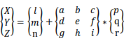
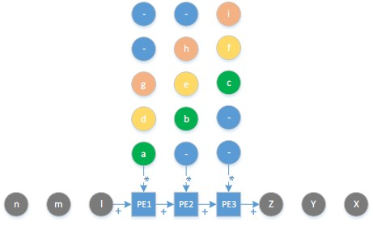
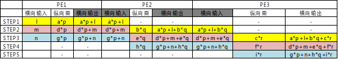

Systolic Array Matrix Multiplication
通用脉动阵列及矩阵乘法
- 简介
-
脉动阵列，是现在某些智能加速芯片的一种架构；由一组处理单元 Processor Elements组成； 处理单元简称是PE，也经常简称为Cell；所有的Cell是用Mesh结构互连起来； 每个Cell处理一系列的流经自己的数据；之后传递给邻居的Cell，大部分的Cell都是相同的操作。
SIMD是和其相似的架构，但是SIMD如名字表达的那样，控制指令是唯一的，数据是不同的，并且数据从内存加载到PE； 脉动阵列的区别是可能从片上的RAM加载到PE，并且每个PE有自己的控制单元，这样不仅仅是数据的并行了。 - 设计优势点
-
脉冲阵列用在专用的加速芯片上的优势是：
1. 设计上比较规整，简单；
2. 通信或者传递信息的并发性好；
3. 平衡了计算和IO，因为一般都是计算等待IO。 - 设计劣势点
-
脉冲阵列用在专用的加速芯片上的优势是：
1. 全局同步受限于时延；
2. 片上RAM的带宽要求比较大；
3. 因为缺少互联的协议子系统，而缺少软件上的容错。 - 分类
-
一维：适合单一的IO，因此用处不是很大；
二维：一般都是平面矩阵，放了很多的处理单元，但是只允许边界的单元进行IO；
三维：允许IO经过每个处理单元。 - 举例：使用二维脉动阵列计算矩阵乘
-
使用三个计算单元计算这个矩阵乘的设计

下面是三个脉动阵列：

下面是每个步骤的过程数据：
 - PE计算单元
-
代码实现：
module pe( clk, reset_n, clr, in_a, in_b, out_a, out_b, out_c ); parameter size = 8; input clk; input reset_n; input clr; input[size-1:0] in_a; input[size-1:0] in_b; output reg [size-1:0] out_a; output reg [size-1:0] out_b; output reg [size+size-1:0] out_c; always@(posedge clk or negedge reset_n) begin if(!reset_n) begin out_a <= 0; out_b <= 0; out_c <= 0; end else if(clr) begin out_c <= in_a * in_b; // clear the pervious result out_a <= in_a; out_b <= in_b; end else begin out_a <= in_a; out_b <= in_b; out_c <= in_a * in_b + out_c; end end endmodule - systolic array
-
用于icp的systolic array需要做3*4与4*n矩阵的乘法，得到一个3*n矩阵，即一个新的点集。具体代码：
module systolic_array( clk, reset_n, in_a11, in_a21, in_a31, in_b11, in_b12, in_b13, out_c11, out_c12, out_c13, out_c21, out_c22, out_c23, out_c31, out_c32, out_c33 ); parameter size = 8; input clk; input reset_n; input[size-1:0] in_a11; input[size-1:0] in_a21; input[size-1:0] in_a31; input[size-1:0] in_b11; input[size-1:0] in_b12; input[size-1:0] in_b13; wire[size-1:0] in_a12; wire[size-1:0] in_a13; wire[size-1:0] in_a22; wire[size-1:0] in_a23; wire[size-1:0] in_a32; wire[size-1:0] in_a33; wire[size-1:0] in_b21; wire[size-1:0] in_b31; wire[size-1:0] in_b22; wire[size-1:0] in_b32; wire[size-1:0] in_b23; wire[size-1:0] in_b33; wire[size+size-1:0] c11; wire[size+size-1:0] c12; wire[size+size-1:0] c13; wire[size+size-1:0] c21; wire[size+size-1:0] c22; wire[size+size-1:0] c23; wire[size+size-1:0] c31; wire[size+size-1:0] c32; wire[size+size-1:0] c33; output reg[size+size-1:0] out_c11; output reg[size+size-1:0] out_c12; output reg[size+size-1:0] out_c13; output reg[size+size-1:0] out_c21; output reg[size+size-1:0] out_c22; output reg[size+size-1:0] out_c23; output reg[size+size-1:0] out_c31; output reg[size+size-1:0] out_c32; output reg[size+size-1:0] out_c33; reg[1:0] counter; always@(negedge clk or negedge reset_n) //inner clk for changing state begin if(!reset_n) begin counter <= 0; end else begin counter <= counter + 2'd1; end end pe pe11( .clk(clk), .reset_n(reset_n), .clr(counter==2'd0), .in_a(in_a11), .in_b(in_b11), .out_a(in_a12), .out_b(in_b21), .out_c(c11) ); pe pe21( .clk(clk), .reset_n(reset_n), .clr(counter==2'd1), .in_a(in_a21), .in_b(in_b21), .out_a(in_a22), .out_b(in_b31), .out_c(c21) ); pe pe31( .clk(clk), .reset_n(reset_n), .clr(counter==2'd2), .in_a(in_a31), .in_b(in_b31), .out_a(in_a32), .out_b(), .out_c(c31) ); pe pe12( .clk(clk), .reset_n(reset_n), .clr(counter==2'd1), .in_a(in_a12), .in_b(in_b12), .out_a(in_a13), .out_b(in_b22), .out_c(c12) ); pe pe22( .clk(clk), .reset_n(reset_n), .clr(counter==2'd2), .in_a(in_a22), .in_b(in_b22), .out_a(in_a23), .out_b(in_b32), .out_c(c22) ); pe pe32( .clk(clk), .reset_n(reset_n), .clr(counter==2'd3), .in_a(in_a32), .in_b(in_b32), .out_a(in_a33), .out_b(), .out_c(c32) ); pe pe13( .clk(clk), .reset_n(reset_n), .clr(counter==2'd2), .in_a(in_a13), .in_b(in_b13), .out_a(), .out_b(in_b23), .out_c(c13) ); pe pe23( .clk(clk), .reset_n(reset_n), .clr(counter==2'd3), .in_a(in_a23), .in_b(in_b23), .out_a(), .out_b(in_b33), .out_c(c23) ); pe pe33( .clk(clk), .reset_n(reset_n), .clr(counter==2'd0), .in_a(in_a33), .in_b(in_b33), .out_a(), .out_b(), .out_c(c33) ); always@(posedge clk or negedge reset_n)//this part can pick out the results begin if(!reset_n) begin out_c11 <= 0; out_c12 <= 0; out_c13 <= 0; out_c21 <= 0; out_c22 <= 0; out_c23 <= 0; out_c31 <= 0; out_c32 <= 0; out_c33 <= 0; end else begin case (counter) 3'd0: begin out_c11 <= c11; out_c33 <= c33; end 3'd1: begin out_c12 <= c12; out_c21 <= c21; end 3'd2: begin out_c13 <= c13; out_c22 <= c22; out_c31 <= c31; end 3'd3: begin out_c23 <= c23; out_c32 <= c32; end default: begin out_c11 <= out_c11; out_c12 <= out_c12; out_c21 <= out_c21; out_c13 <= out_c13; out_c22 <= out_c22; out_c31 <= out_c31; out_c23 <= out_c23; out_c32 <= out_c32; out_c33 <= out_c33; end endcase end end endmodule - 组会问题
-
1.What's the size of the data?
2.Is the data 3-Dimentional?
3.How the data stored? If we use the bram, how many ports does it have? For the systolic array is pipelined, I need to store 3 data at the same time.
部分引用自：https://www.cnblogs.com/flyinggod/p/8727584.html